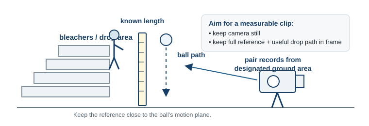
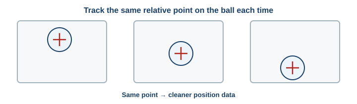

Physics · First 4 Days · Investigation
Ball Drop Video Analysis: Build a CER from Data
Record a usable ball-drop video, analyze your own measurements, and turn those measurements into evidence.
Learning Target: I can successfully participate in physics class by following course procedures and using evidence-based reasoning to explain physical phenomena.
Question
1
Predict before measuring
What happens to the ball’s speed while it falls?
Write a prediction and one reason for your thinking. Your prediction is not evidence yet.
Outside — Capture the Data Source
Your pair will record several drops. The goal is not the most dramatic video — it is a video that can be measured.

2
Record 2–3 usable takes
- Stay in the designated recording area and follow teacher directions around the bleachers.
- Keep the camera still and face the motion from the side as closely as practical.
- Keep the ball’s full drop path in the frame.
- Keep the known-length reference visible and close to the ball’s motion plane.
- Start recording before release and keep recording through the end of the drop.
- Record more than one take so your pair can choose the clearest clip indoors.
Pair check: Before leaving, can you clearly see both the ball and the full reference length in at least one clip?
Inside — Vernier Walk-Through
Follow the teacher demonstration one move at a time. Do the same move on your pair’s best clip before going on.
- Choose your clip. Import the clearest take into Vernier Video Analysis.
- Set the scale. Use the visible known-length reference.
- Set the origin. Choose a sensible vertical direction and keep that sign convention.
- Choose one tracking point. Use the same relative point on the ball every time.
- Track with a consistent frame step. Mark every frame, or use the same fixed step throughout.
- Display the vertical position–time data. Do not decide the CER from the graph alone; you will use measured interval comparisons.

Quality check: Compare your first three marked frames with your partner. Are you clicking the same relative point on the ball and using a consistent frame step?